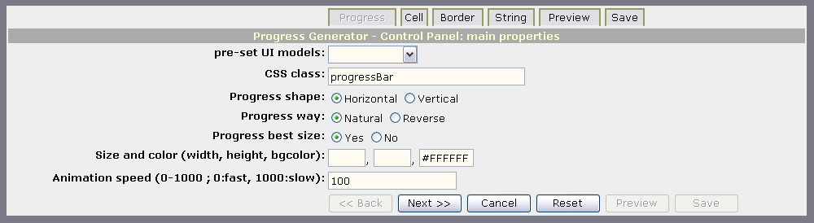

examples
examples$Date$
 Introduction
IntroductionThis example requires :
Be aware that:
This example will run a default ProgressBar Controller Wizard that will help you to create your own progress bar. You may even save the CSS and/or PHP code at end !
Few lines of code are necessary to run this generator. First we start a session at line 15 (to keep data), then we create a HTML_Progress_Generator instance at line 17 without options, and finally run the controller wizard itself at line 18.
[Top]
 Render options
Render options [Top]
 Output
Output
[Top]
 PHP source syntax highlight
PHP source syntax highlight[Top]
 Play generator
Play generatorRun the script.
[Top]